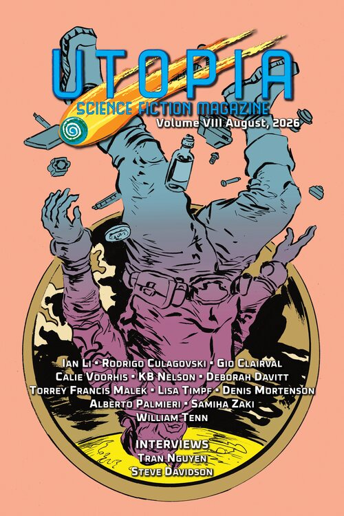

26 August 2026·4 stories
Utopia Science Fiction
Vol. VIII, August 2026
The eighth-anniversary issue, and the one where editor Tristan Evarts announced Utopia is going to print alongside the digital edition.
Read the full review at Tangent Online